Last Updated: 2025-10-17
This Exploring Iceberg v3 with Starburst tutorial assumes you are conceptually familiar with Apache Iceberg as a modern table format and with using Trino as a query engine. Additionally, it is assumed you have some awareness of the new Iceberg features that have surfaced in version 3 of the specification as summarized in Iceberg v3 + Starburst.
In this tutorial, you will learn by example how some of the major version 3 changes function. You will use Starburst Galaxy as the environment for this exploration.
Once you've completed this tutorial, you will be able to:
VARIANT data type in your tables.Log into your Starburst Galaxy environment with the following configuration.
Navigate to Query > Query editor from the left nav, open a new editor tab, name it Iceberg v3, and choose the aws-us-east-1-free cluster from the first pulldown menu.
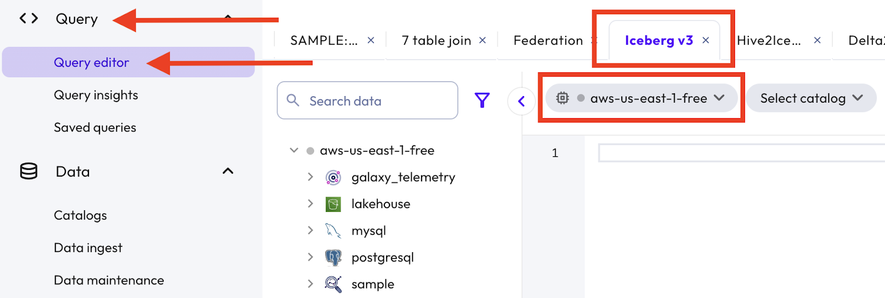
Run the following SQL to create, and set the editor to use, a new schema.
CREATE schema tmp_cat.iceberg_v3;
USE tmp_cat.iceberg_v3;Notice the final pulldown shows the iceberg_v3 schema is selected which will allow us to reference tables without the fully qualified catalog_name.schema_name prefix.
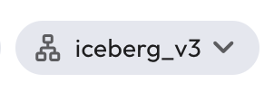
Run the following SQL to create a test table and ensure it is using format_version=3.
CREATE TABLE quick_test
WITH (type='iceberg', format_version=3)
AS SELECT * FROM tpch.tiny.part;
SHOW CREATE TABLE quick_test;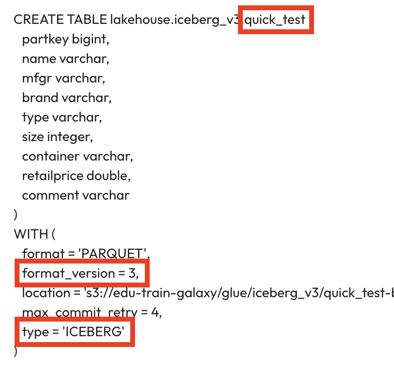
Run the following SQL to understand the data characteristics that will be used.
SELECT count(*) AS total_records,
min(custkey) AS starting_id,
max(custkey) AS ending_id
FROM tpch.tiny.customer;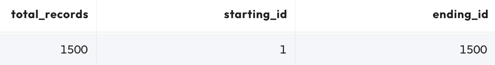
Notice that we will be focusing on 1500 rows of data that have surrogate key values ranging from 1 - 1500.
This data size is very small and we want multiple underlying files, so run the following SQL to ensure that 3 data files are created; each with 500 rows.
CREATE TABLE cust_v2
WITH (type='iceberg', format_version=2)
AS SELECT * FROM tpch.tiny.customer
WHERE custkey <= 500;
INSERT INTO cust_v2
SELECT * FROM tpch.tiny.customer
WHERE custkey BETWEEN 501 AND 1000;
INSERT INTO cust_v2
SELECT * FROM tpch.tiny.customer
WHERE custkey > 1000;
SELECT substring(file_path, length(file_path) - 20)
AS end_of_file_name,
file_format, record_count
FROM "cust_v2$files";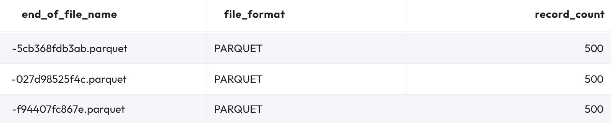
Delete the 300 rows whose custkey values are multiples of 5.
DELETE FROM cust_v2
WHERE mod(custkey, 5) = 0;Remember that there is a positional delete file created for each data file that contains records that need to be deleted. Each of the data files have their own 100 "deletion markers" recorded in the corresponding positional delete file. Run the same query as before to verify the underlying files to see the new positional delete files.
SELECT substring(file_path, length(file_path) - 20)
AS end_of_file_name,
file_format, record_count
FROM "cust_v2$files";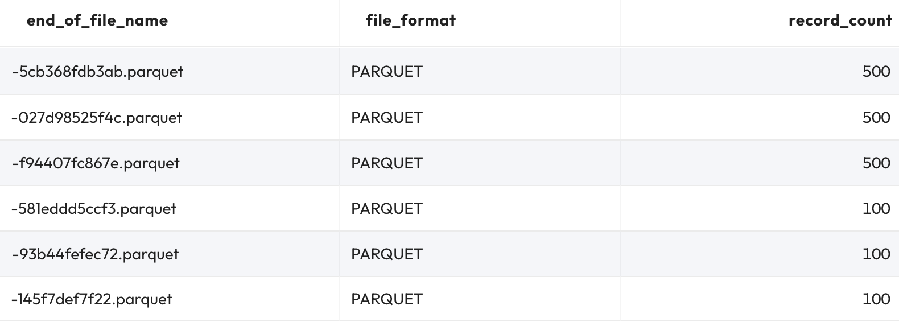
The bottom 3 files are the v2 positional delete files. One for each of the data files. Each referencing 100 records from the 300 total that have been deleted.
Now, delete the 600 records whose customer keys are even numbers and list the $files metadata table again.
DELETE FROM cust_v2
WHERE mod(custkey, 2) = 0;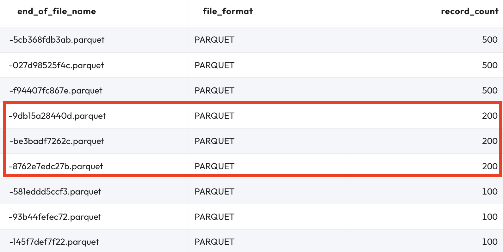
The middle 3 files are the next round of v2 positional delete files. Like before, one for each of the data files. Each referencing 200 records from the 600 total that have been deleted this time.
Each time we run another DELETE command a new positional delete file will be created for each affected data file. This will continue to grow and sprawl until we can run a compaction to clean it all up.
Let's see it!
DELETE FROM cust_v2
WHERE mod(custkey, 3) = 0;Yep, another batch of delete files are created.
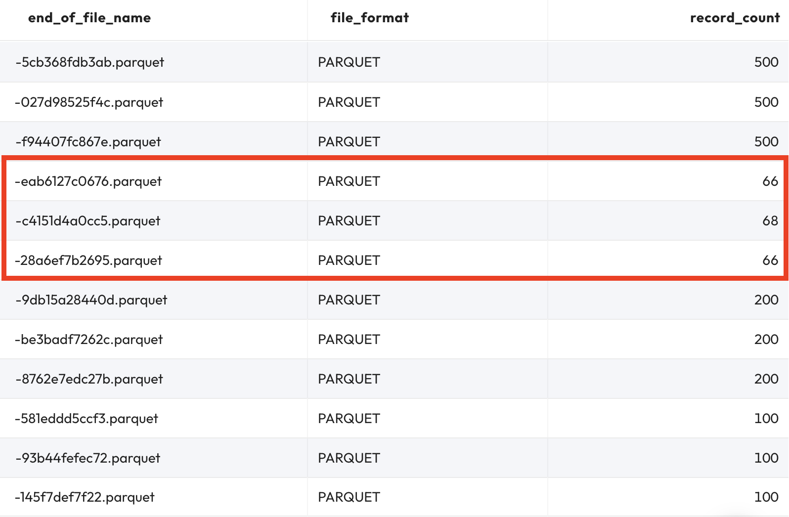
Fortunately, the necessary compaction maintenance activity that focuses on rolling together many smaller files into fewer bigger ones comes to the rescue. This operation will be able to collapse these delete files as it does a logical merge of all the deletion markers contained within.
ALTER TABLE cust_v2 EXECUTE optimize;Querying the $files metadata table yet again verifies this made a big difference.
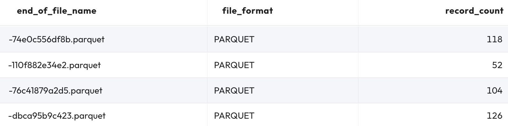
In fact, the total number of records across these files equals 400 as it should be. This verifies that none of these Parquet files are delete files; each is a ‘normal' data file.
Like in the last step, create and populate a test table with the same 1500 rows across another set of 3 data files. This time we will set format_version=3 to see the new deletion vector files improvements.
CREATE TABLE cust_v3
WITH (type='iceberg', format_version=3)
AS SELECT * FROM tpch.tiny.customer
WHERE custkey <= 500;
INSERT INTO cust_v3
SELECT * FROM tpch.tiny.customer
WHERE custkey BETWEEN 501 AND 1000;
INSERT INTO cust_v3
SELECT * FROM tpch.tiny.customer
WHERE custkey > 1000;
SELECT substring(file_path, length(file_path) - 20)
AS end_of_file_name,
file_format, record_count
FROM "cust_v3$files";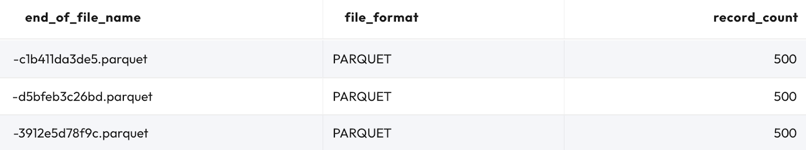
Let's do it again; delete the 300 rows whose customer keys are evenly divisible by 5, then query the $files metadata table.
DELETE FROM cust_v3
WHERE mod(custkey, 5) = 0;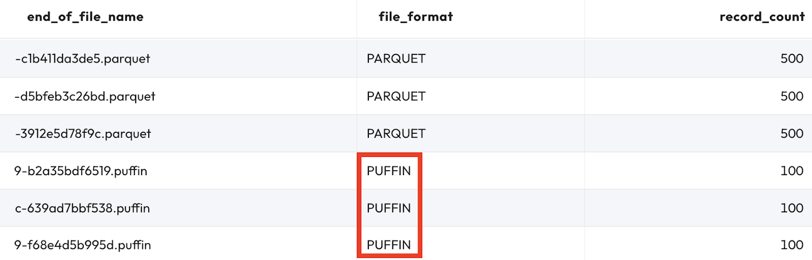
As before, the bottom 3 files represent the 300 records deleted. What is different is that these delete files are persisted as Puffin files, not Parquet ones.
Now, delete the 600 records with even numbers for their customer keys then list the $files metadata table again.
DELETE FROM cust_v3
WHERE mod(custkey, 2) = 0;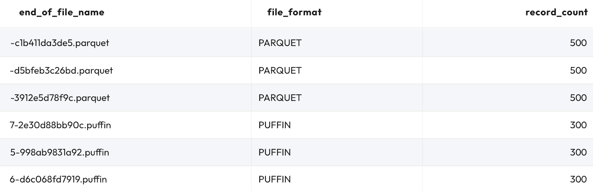
Notice that there are still only 3 deletion vector (Puffin) files. That's because the compute engine merged the contents of the previous 100 affected rows per file with the new change deleting another 200 rows. The deletion vectors now include pointers to the comprehensive 300 records for each of their associated 500 record data files.
For any new deletions aligned to a data file with an existing deletion vector file, the compute engine will merge the comprehensive contents into a new Puffin file. This approach keeps a smaller number of delete files around that need to be read when querying the table. It will prevent the delete file spawl that occurs in the v2 implementation.
Show me!
DELETE FROM cust_v3
WHERE mod(custkey, 3) = 0;As we previously witnessed, another set of comprehensive deletion vectors were created that span the rolling total of 1100 records deleted thus far. Fortunately, these are captured in 3 delete files instead of 9 with the v2 positional delete files.
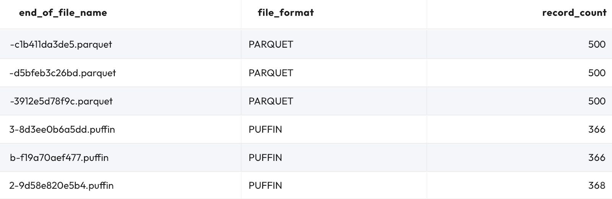
Fortunately, the necessary compaction maintenance activity that helped fold the v2 positional delete files also works with the new v2 deletion vector files.
ALTER TABLE cust_v3 EXECUTE optimize;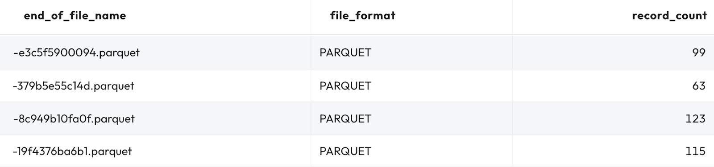
As before, the total number of records across these files equals 400 and we see there are no Puffin files for this new snapshot.
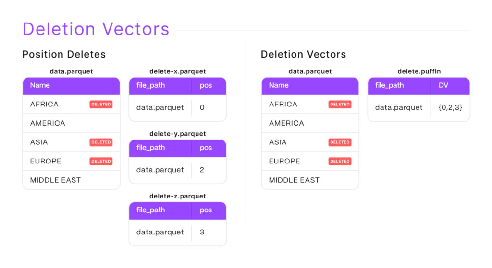
With the sprawl of v2 positional delete files comes more and more file I/O which decreases performance and increases costs. The v3 deletion vector files ensure that for a given snapshot there will never be more than a single deletion file aligned to each data file. Performance doesn't keep degrading as more and more deletions occur and we prevent cost spikes for data lake solutions who charge on the number of GET operations.
The connector's Iceberg to Trino type mapping shows that Iceberg's VARIANT datatype corresponds to Trino's internal JSON type. This allows you to store and query semi-structured data in Iceberg tables while maintaining compatibility with Trino's SQL syntax.
For example, when you create a table with a JSON column in Trino, the connector transparently maps it to a VARIANT column in Iceberg.
CREATE TABLE variant (data JSON)
WITH (type='iceberg', format_version=3);
INSERT INTO variant
VALUES
JSON '{"company": "Starburst"}',
JSON '{"engine": "Trino"}';Querying the table returns the JSON values as expected.
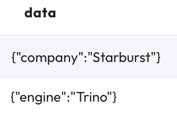
While the query results look like regular JSON, the underlying Parquet files reveal that Iceberg represents the VARIANT type using two fields:
A simplified example of the internal Parquet structure looks like this:
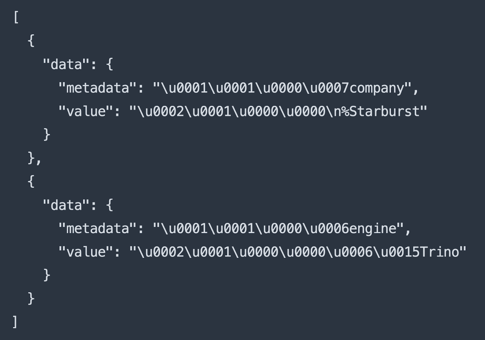
This encoding enables Iceberg to efficiently store and query semi-structured JSON data while maintaining flexible schema evolution AND multi-engine compatibility.
To explore the VARIANT datatype further, let's create a slightly more complex table. The following DDL has a couple of ‘normal' structured columns and a single field to house some semi-structured data.
CREATE TABLE penpals
(name varchar, status varchar, details JSON)
WITH (type='iceberg', format_version=3);Now, INSERT a few records into the new table that we can use in some more interesting queries.
INSERT INTO penpals
VALUES
('Amber & Esmée (sisters)', 'swapping', JSON '
{ "address": { "recipient": "Amber & Esmée Toeter",
"street": "Westeinde 469", "postal_code": "7671EZ", "city": "Vriezenveen",
"country": "Netherlands" },
"socials": [ { "app": "Instagram", "id": "postsistersse03" }, { "app": "Postcrossing", "id": "Amber00" } ]
}
'),
('Lester', 'swapping', JSON '
{ "address": { "recipient": "Lester Martin",
"line1": "5290 Matt Hwy", "line2": "Ste 502, Box 168", "city": "Cumming", "state": "GA", "zip": "30028",
"country": "USA" },
"email": "lester.martin@gmail.com",
"socials": [ { "app": "Instagram", "id": "lester_tx.postcards4swap" }, { "app": "Postcrossing", "id": "Love2Kayak" } ]
}
'),
('Patricia', 'waiting', JSON '
{ "socials": [ { "app": "PenPalWorld", "id": "11858644" }, { "app": "Skype", "id": "erdeiszende17" } ]
}
'),
('Joe', 'overdue', JSON '
{ "address": { "recipient": "Joe Schmoe",
"line1": "123 Main St", "city": "Anytown", "state": "TX", "zip": "76179",
"country": "USA" },
"email": "joe@schmoe.name",
"socials": [ { "app": "Postcrossing", "id": "joeschmoe99" }, { "app": "Facebook", "id": "joe99schmoe" } ]
}
');Take a few minutes to review the data in the DML above. Querying it shows it as JSON like before.
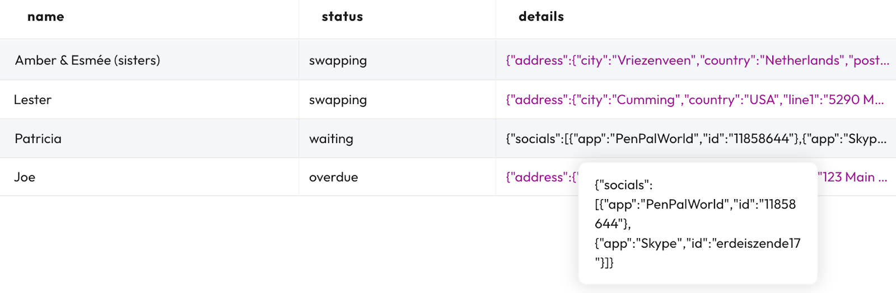
Reviewing the initial table population DML shows:
email in the details semi-structured column.address and all of those have a value for its nested country property.Since Trino has a variety of JSON functions and operators we can interrogate those semi-structured data elements with a normal Trino query.
SELECT name,
CAST(json_extract_scalar(details, '$.email') AS varchar) AS email,
CAST(json_extract_scalar(details, '$.address.country') AS varchar) AS country
FROM penpals;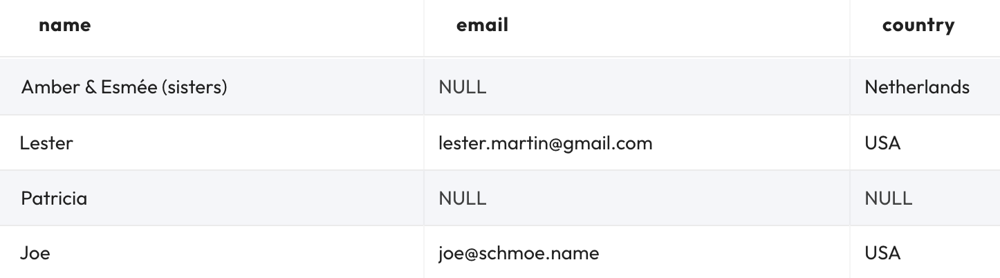
Run the following query to find the 2 penpals who have an email address and live in the USA.
WITH a_few_fields AS (
SELECT name,
CAST(json_extract_scalar(details, '$.email') AS varchar) AS email,
CAST(json_extract_scalar(details, '$.address.country') AS varchar) AS country
FROM penpals
)
SELECT name, email FROM a_few_fields
WHERE country = 'USA' AND email IS NOT null;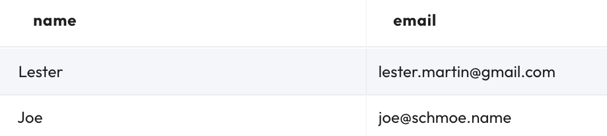
Peering back at the INSERT statements shows that each details column includes an array named socials which contains objects for various social media apps that each person has accounts with. This next query focuses on the social media app and id values.
SELECT name,
json_extract(details, '$.socials') AS socials
FROM penpals;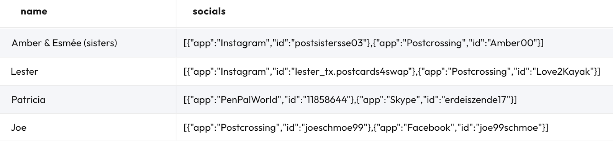
If we want to dig into this a bit deeper and find just folks who have an Instagram account we do have to wade into the wild & mystical world of Trino querying. We could start out by unnesting the social array.
SELECT name, social
FROM (
SELECT
name,
CAST(json_extract(details, '$.socials') AS ARRAY<MAP<varchar,varchar>>) AS socials
FROM penpals
)
CROSS JOIN UNNEST(socials) AS socials(social);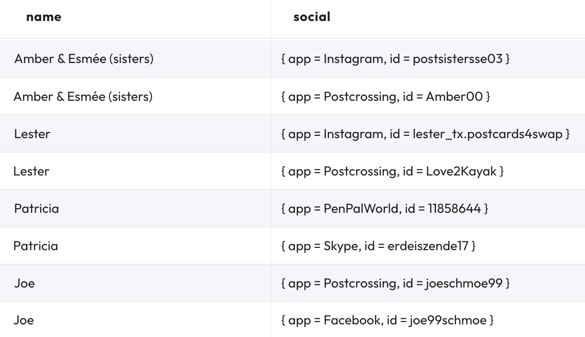
That's interesting, but we were looking for just Instagram accounts. Come on in, the Trino SQL water feels fine!!
WITH unwound_socials AS (
SELECT name,
social['app'] AS app_name, social['id'] AS user_id
FROM (
SELECT
name,
CAST(json_extract(details, '$.socials') AS ARRAY<MAP<varchar,varchar>>) AS socials
FROM penpals
)
CROSS JOIN UNNEST(socials) AS socials(social)
)
SELECT name, user_id AS insta_id FROM unwound_socials
WHERE app_name = 'Instagram';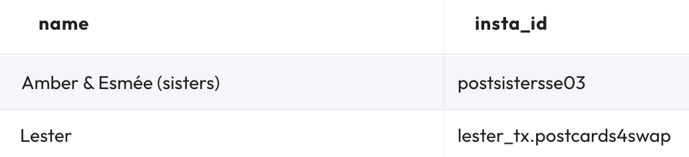
In all fairness, that was a lot of SQL to get what we were looking for, but you wanted VARIANT and you didn't want to unwind it all out to a nice flat table so...
But seriously, you could wrap it all in a nice little view.
CREATE VIEW insta_users_vw AS
WITH unwound_socials AS (
SELECT name,
social['app'] AS app_name, social['id'] AS user_id
FROM (
SELECT
name,
CAST(json_extract(details, '$.socials') AS ARRAY<MAP<varchar,varchar>>) AS socials
FROM penpals
)
CROSS JOIN UNNEST(socials) AS socials(social)
)
SELECT name, user_id AS insta_id FROM unwound_socials
WHERE app_name = 'Instagram';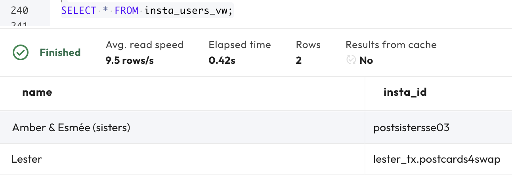
There's more additions to datatypes than just the new VARIANT goodness. Let's hit on some of the new stuff.
Iceberg v3 introduces support for nanosecond precision timestamps and the Iceberg connector mappings align these directly to Trino's TIMESTAMP(9) and TIMESTAMP(9) WITH TIME ZONE datatypes.
Check out what happens today in Iceberg v2 tables.
CREATE TABLE timestamp_nanos_v2 (data TIMESTAMP(9))
WITH (type='iceberg', format_version=2);
INSERT INTO timestamp_nanos_v2
VALUES TIMESTAMP '2025-08-21 12:34:56.123456789';
SELECT * FROM timestamp_nanos_v2;Look closely at the output below and you'll see it gets rounded at the microsecond level.
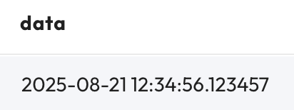
Iceberg v3 can persist data down to the nanosecond level.
CREATE TABLE timestamp_nanos_v3 (data TIMESTAMP(9))
WITH (type='iceberg', format_version=3);
INSERT INTO timestamp_nanos_v3
VALUES TIMESTAMP '2025-08-21 12:34:56.123456789';
SELECT * FROM timestamp_nanos_v3;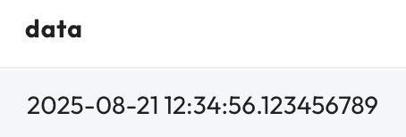
This ensures that applications can capture events with extremely high precision — down to the nanosecond — which is valuable in use cases such as financial transactions, scientific measurements, or system event logging.
Sure... traditional RDBMSs have had default column values for decades, but we did get them for Iceberg in 2025. Let's create a table with this new option and to try it out.
CREATE TABLE default_column (
id int,
data varchar DEFAULT 'bob'
)
WITH(type='iceberg', format_version=3);Now, when you insert rows, you can either provide a value for data explicitly or omit it and let Iceberg assign the default.
INSERT INTO default_column VALUES (1, 'alice');
INSERT INTO default_column (id) VALUES (2);Querying the table shows the expected behavior.
SELECT * FROM default_column;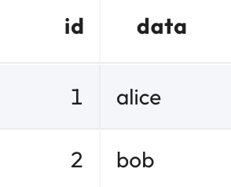
It also works when adding a new column, but it does NOT backfill the existing records' null column value.
ALTER TABLE default_column
ADD COLUMN birthday DATE DEFAULT DATE '2025-06-02';
INSERT INTO default_column (id, data) VALUES (3, 'charlie');
SELECT * FROM default_column;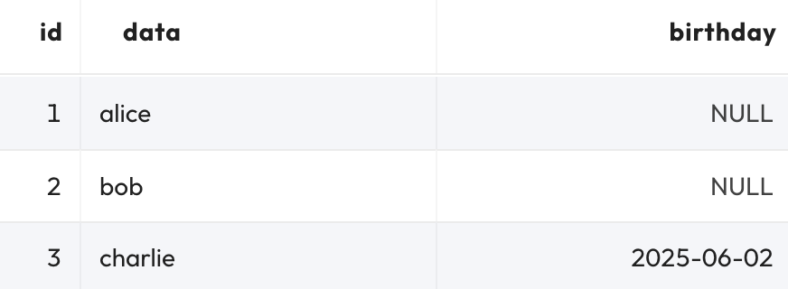
This feature helps simplify schema design and reduces the need for application-side logic to handle missing values.
Iceberg v3 introduces row lineage, a feature that can be used to build incremental materialized views in the future. The connector adds new metadata columns that make it easier to track the lifecycle of rows over time. These columns are automatically available and require no schema changes:
$row_id: An implicit, unique row identifier that is automatically assigned when a row is created.$last_updated_sequence_number: A sequence number that indicates the last time a row was updated.This feature allows you to reason about row versioning and lineage directly from queries.
To help see the confusion that exists with Iceberg v2, let's create a table with some records in it to test with.
-- create table with custkeys 100-103
CREATE TABLE cust_without_rowids
WITH (type='iceberg', format_version=2)
AS SELECT (custkey + 99) AS custkey, comment from tpch.tiny.customer where custkey < 5;
SELECT * FROM cust_without_rowids ORDER BY custkey;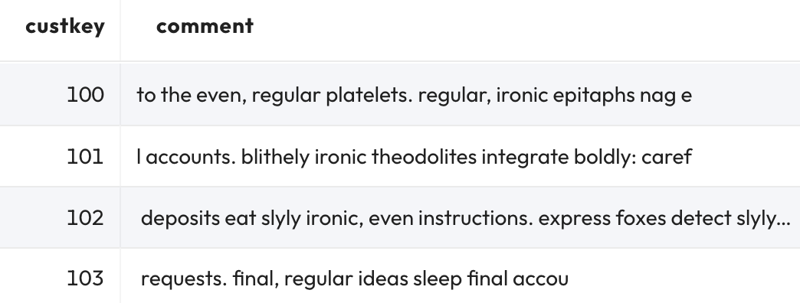
For now, run the following SQL statements without reviewing them.
-- don't look at what is happening here...
UPDATE cust_without_rowids SET custkey = 104 WHERE custkey = 100;
DELETE FROM cust_without_rowids WHERE custkey IN (101,102);
UPDATE cust_without_rowids SET custkey = 105 WHERE custkey = 103;
INSERT INTO cust_without_rowids VALUES
(106, 'requests deposits accounts plateletes, ironicde final'),
(107, 'accounts birthday epitash squashing foxes above town');
-- looks like all 4 were deleted and 4 new records were added
SELECT * FROM cust_without_rowids ORDER BY custkey;As the comments above suggest, it initially looks like the original 4 rows (customer keys 100 - 103) were deleted and 4 new rows were added (customer keys 104 - 107).
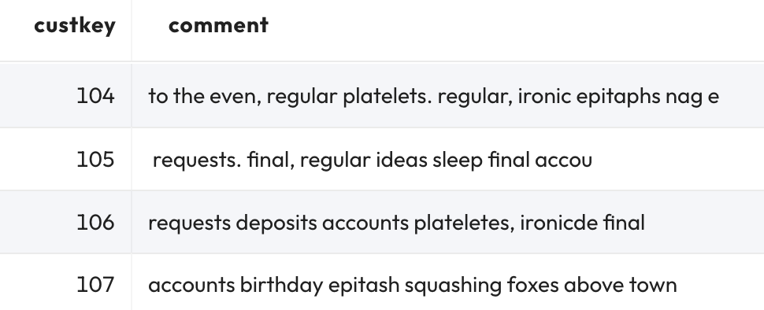
Just looking at the before and after data table values, it is not clear what really happened.
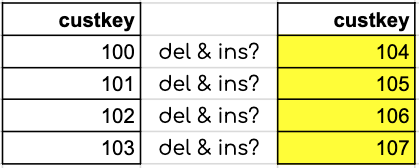
In actuality, the following changes were made.
We can do some "interesting" things like the following (you would need to swap in your initial and final snapshot IDs) to start down the path of sorting this out, but DON'T!
(SELECT custkey FROM cust_without_rowids FOR VERSION AS OF 5452915122954318146
EXCEPT
SELECT custkey FROM cust_without_rowids FOR VERSION AS OF 8920509937939341340)
UNION ALL
(SELECT custkey FROM cust_without_rowids FOR VERSION AS OF 8920509937939341340
EXCEPT
SELECT custkey FROM cust_without_rowids FOR VERSION AS OF 5452915122954318146);Again, don't mess with that as v3 just might save us!
Well, maybe it v3's row lineage isn't Superman (or even Joey), but it can help make some sense out of all of this. Let's set up a table like we did before to test with.
-- create table with custkeys 100-103
CREATE TABLE cust_with_rowids
WITH (type='iceberg', format_version=3)
AS SELECT (custkey + 99) AS custkey, comment from tpch.tiny.customer where custkey < 5;
-- see custkeys 100-103 AND some other cool things
SELECT custkey, "$row_id", "$last_updated_sequence_number"
FROM cust_with_rowids ORDER BY custkey;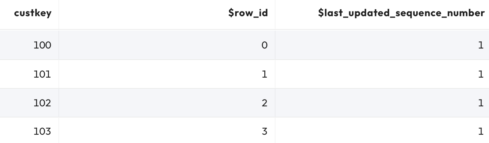
Yes, we have the same original customer key values, but now we have $row_id and $last_updated_sequence_number as well.
As explained at the beginning of this step, these columns are automatically available and require no schema changes:
$row_id: An implicit, unique row identifier that is automatically assigned when a row is created.$last_updated_sequence_number: A sequence number that indicates the last time a row was updated.All 4 records were added in the initial sequence number of changes.
Now, let's run the same operations as before, but look a bit closer this time. Take note of the additional comments regarding what is actually happening and the sequence numbers that are being tracked behind the scenes.
-- make some changes as earlier, but note the sequences of mods
-- SEQ# 2
UPDATE cust_with_rowids SET custkey = 104 WHERE custkey = 100;
-- SEQ# 3
DELETE FROM cust_with_rowids WHERE custkey IN (101,102);
-- SEQ# 4
UPDATE cust_with_rowids SET custkey = 105 WHERE custkey = 103;
-- SEQ# 5
INSERT INTO cust_with_rowids VALUES
(106, 'requests deposits accounts plateletes, ironicde final'),
(107, 'accounts birthday epitash squashing foxes above town');Query the v3 table again to see if these additional metadata columns help explain what happened.
-- look at row_id to see that the early DML was actually run as seen by
-- row_id 0 and 3 (orig custkey 100 & 103) where UPDATED
-- SEQ# 2 & SEQ# 4
-- row_id 1 and 2 (orig custkey 101 & 102) where DELETED
-- not seen, but still SEQ# 3
-- row_id 6 and 7 (custkey 7 & 8) where INSERTED
-- SEQ# 5
SELECT custkey, "$row_id", "$last_updated_sequence_number"
FROM cust_with_rowids ORDER BY "$row_id";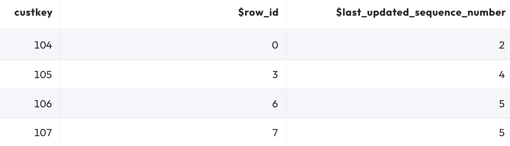
I know... clear as mud! Let's unpack what happened in the bullets and visualization below by looking at the row ID values.
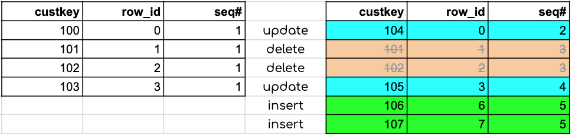
In addition to being a foundational change for building incremental materialized views in the future, row lineage is beneficial for other features such as the following.
Run the following SQL to remove the schema and all the objects within it. This will also clear up the object store files that were created during this tutorial.
DROP SCHEMA iceberg_v3 CASCADE;Click on Admin > Clusters from the left nav.
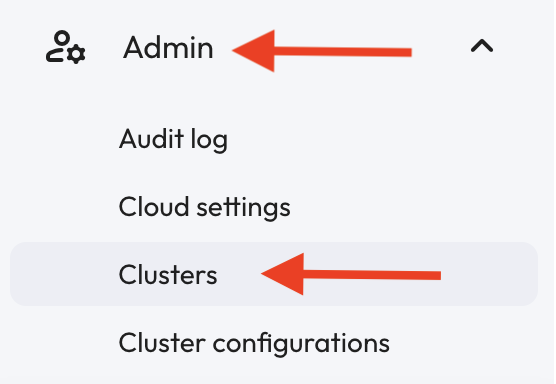
Find the aws-us-east-1-free cluster in the presented list and click on the vertical ellipsis menu icon on the far right of this row. In the menu that surfaces, click on Edit cluster.
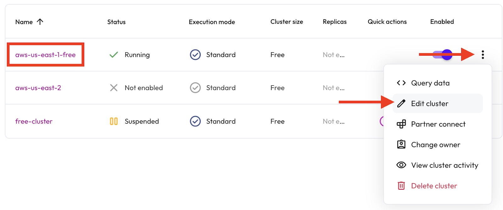
In the Edit cluster configuration screen, click on the Catalogs pulldown menu.
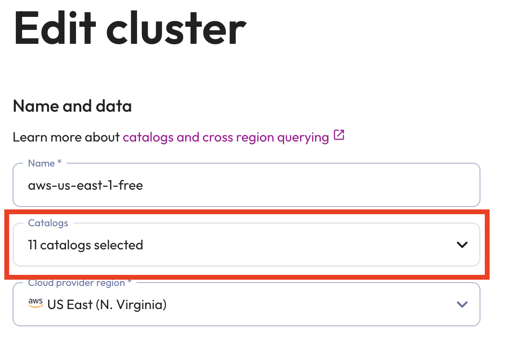
Uncheck the box on the for the tmp_cat (us-east-1) item in the list that surfaces, then click on Save changes.
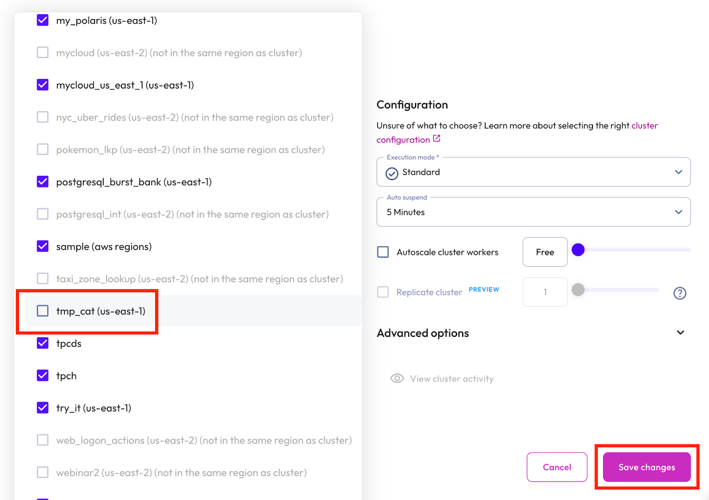
Navigate to Data > Catalogs from the left nav to see the list of Catalogs. Type tmp_cat in the search box to trim the list to only this catalog. Click on the cluster name link.
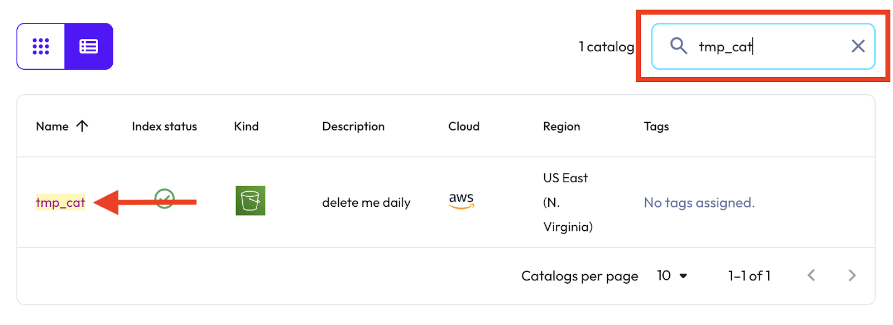
Click on the vertical ellipsis menu icon and choose Delete catalog.
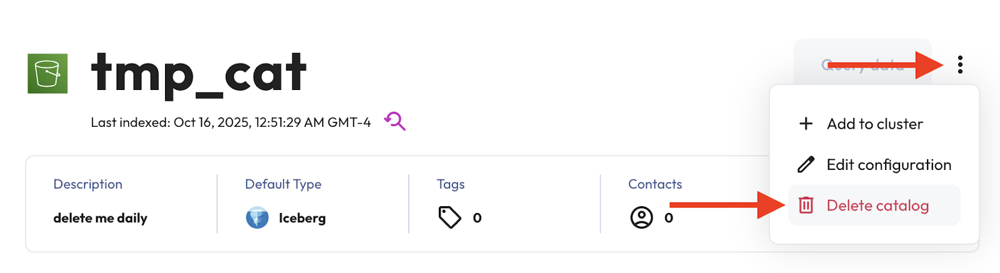
Follow the on-screen instructions to enable, and click, the Yes, delete button.
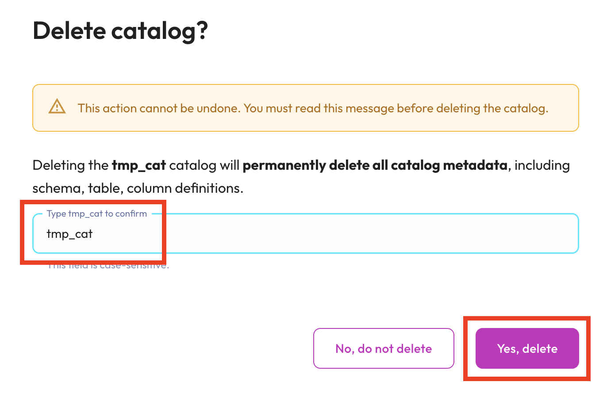
Congratulations, you've completed the Exploring Iceberg v3 with Starburst tutorial!
VARIANT data type in your tables.Check out some of these codelabs...